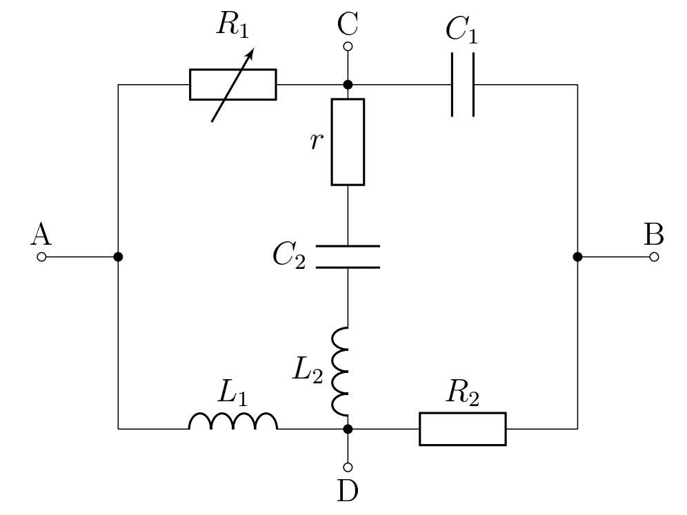

Y22 (2022) — English translation
There is no need to estimate errors in this problem! The PE3 program meets this task. This problem asks you to examine a gray box with four terminals. Inside the box there is a well-known circuit (see figure). The AB outputs are supplied with a sinusoidal voltage with an amplitude of 1 V and an adjustable frequency $\omega$. It is possible to measure the amplitudes of the total current $I$ through the circuit (between outputs AB) and the voltage $U$ in the section $CD$. In addition, you can set the resistance value of the variable resistor $R_1$. The program displays graphs of $I$ (in amperes) and $U$ (in volts) in the selected frequency range. The program takes input frequency range $\omega$ ($\text{c}^{-1}$) and resistance $R_1$ (Ohm). To set the range, you need to specify the minimum frequency, maximum frequency and step that is used to plot the graph. All frequencies must be positive, the maximum is greater than the minimum! The integer part is separated from it by a fractional dot.
This problem asks you to examine a gray box with four terminals. Inside the box there is a well-known circuit (see figure). The AB outputs are supplied with a sinusoidal voltage of 1 V amplitude and adjustable frequency $\omega$. It is possible to measure the amplitudes of the total current $I$ through the circuit (between outputs AB) and the voltage $U$ in the section $CD$. In addition, you can set the resistance value of the variable resistor $R_1$. The program displays graphs of $I$ (in amperes) and $U$ (in volts) in the selected frequency range.
The program takes input frequency range $\omega$ ($\text{c}^{-1}$) and resistance $R_1$ (Ohm). To set the range, you need to specify the minimum frequency, maximum frequency and step that is used to plot the graph. All frequencies must be positive, the maximum is greater than the minimum! The integer part is separated from it by a fractional dot.

Source: https://pho.rs/p/2849